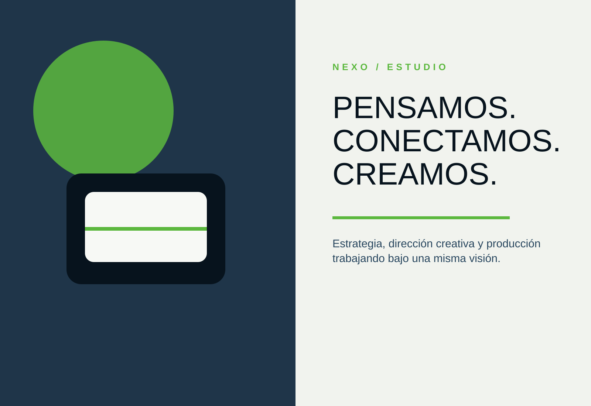

Definimos qué debe comunicar la marca, a quién debe dirigirse y qué acciones necesita para construir una presencia diferenciada.
Diagnóstico · Objetivos · Análisis de competencia · Propuesta de valor · Pilares de contenido · Plan de acciónCONSTRUIMOS LA PRESENCIA DIGITAL QUE HACE QUE UNA MARCA SEA ENTENDIDA, RECORDADA Y ELEGIDA.
En Nexo definimos la estrategia, producimos el contenido, diseñamos cada pieza, gestionamos tus redes y activamos campañas para que toda tu comunicación avance hacia un mismo objetivo.
ESTRATEGIA · CONTENIDO · GESTIÓN DIGITAL
ESTRATEGIA · PRODUCCIÓN · DISEÑO · SOCIAL MEDIA · META ADS · ANÁLISIS
Mérida, Venezuela
nexo.system / casos-seleccionados

01 / 06
Posicionamiento
PUBLICAR CONSTANTEMENTE NO SIGNIFICA ESTAR CONSTRUYENDO UNA MARCA.
Una presencia digital comienza a generar valor cuando cada mensaje, diseño, video y campaña responde a una estrategia y ayuda a alcanzar un objetivo concreto.
CASOS DE ESTUDIO
ESTRATEGIAS QUE
ESTRATEGIAS QUE
TOMAN FORMA.
Trabajamos con marcas de productos, gastronomía, salud y servicios. Cada proyecto responde a una necesidad diferente y muestra cómo convertimos objetivos comerciales en estrategia, contenido y comunicación visual.
EXPLORAR TODOS LOS PROYECTOS ↗
DIRECCIÓN Y SISTEMA
EL RESULTADO VISUAL ES SOLO UNA PARTE DEL TRABAJO.
Detrás de cada publicación existen objetivos, investigación, planificación, dirección creativa, producción y análisis. Nuestro trabajo consiste en lograr que todas esas áreas funcionen juntas.
DIAGNÓSTICO→ESTRATEGIA→PRODUCCIÓN→GESTIÓN→EVALUACIÓN
Catálogo de servicios
UN EQUIPO PARA CONSTRUIR TODO EL SISTEMA DIGITAL DE TU MARCA.
Podemos acompañar una necesidad específica o gestionar el proceso completo. El alcance se define según la etapa, los objetivos y las necesidades reales de cada proyecto.
EXPLORAR TODOS LOS SERVICIOSConvertimos las redes de la marca en un canal organizado, activo y alineado con sus objetivos comerciales.
Planificación mensual · Copywriting · Publicación · Optimización del perfil · Automatizaciones básicas · SeguimientoDesarrollamos el material visual y audiovisual que la estrategia necesita para comunicar, posicionar y generar interés.
Conceptualización · Grabación · Fotografía · Edición de reels · Dirección de producción · Adaptación de formatosCreamos una dirección visual coherente que permite reconocer la marca incluso antes de leer su nombre.
Posts · Carruseles · Historias · Creatividades publicitarias · Campañas · Sistemas visualesDiseñamos y activamos campañas para llevar el contenido a nuevas audiencias y apoyar objetivos de reconocimiento, tráfico o conversión.
Configuración · Creatividades · Segmentación · Publicación · Seguimiento · MétricasEvaluamos lo que sucede después de publicar para tomar mejores decisiones en el siguiente ciclo de contenido.
Métricas orgánicas · Resultados publicitarios · Evaluación de contenido · Reportes · Recomendaciones · Ajustes estratégicosDE UNA NECESIDAD DE NEGOCIO
A UN SISTEMA DE COMUNICACIÓN.
Nuestro proceso permite que cada etapa tenga orden, propósito y continuidad.
DIAGNOSTICAR
Analizamos la marca, su contexto, su público, la competencia y las principales oportunidades de comunicación.
DEFINIR LA DIRECCIÓN
Establecemos los objetivos, la propuesta de valor, los pilares y el enfoque que guiará el contenido.
PLANIFICAR Y PRODUCIR
Desarrollamos las ideas, guiones, diseños, fotografías y videos necesarios para el siguiente ciclo de comunicación.
ACTIVAR
Publicamos, gestionamos y apoyamos el contenido con campañas publicitarias cuando el proyecto lo requiere.
EVALUAR Y OPTIMIZAR
Revisamos métricas, identificamos aprendizajes y ajustamos las decisiones del siguiente ciclo.
Nota: La producción se organiza con anticipación y se acompaña con seguimiento y evaluación periódica.
NEXO ARCHIVE / EN CONSTANTE CONSTRUCCIÓNDETRÁS DE CADA PUBLICACIÓN
DETRÁS DE CADA PUBLICACIÓN
HAY DECISIONES.
El archivo reúne pruebas, encuadres, conceptos, composiciones, referencias y procesos que forman parte de la construcción creativa de cada proyecto.
Nexo Archive Nexo Archive
Nexo Archive Nexo Archive
Nexo Archive Nexo Archive
Nexo Archive Nexo Archive
Nexo Archive Nexo Archive
Nexo Archive
UNA AGENCIA QUE PIENSA Y EJECUTA.
En Nexo reunimos pensamiento estratégico y capacidad de producción para acompañar a las marcas desde la definición de una idea hasta su ejecución y evaluación.
Trabajamos de forma cercana con cada proyecto porque una buena comunicación no se construye únicamente con entregables. También necesita comprensión, criterio y continuidad.
PENSAMOS ANTES DE PUBLICAR.
CADA PIEZA TIENE UNA FUNCIÓN.
LA CREATIVIDAD TAMBIÉN NECESITA DIRECCIÓN.
CONOCER EL ESTUDIO Y EL EQUIPO ↗
EL EQUIPO
LAS PERSONAS DETRÁS DE CADA IDEA.
Nexo reúne estrategia, creatividad, diseño, producción y publicidad para acompañar cada proyecto bajo una misma dirección.
CONOCER AL EQUIPO ↗
¿QUÉ PODRÍAMOS CONECTAR PARA TU MARCA?
TU MARCA YA ESTÁ COMUNICANDO. HAGAMOS QUE CADA MENSAJE TRABAJE A SU FAVOR.
Cuéntanos qué estás construyendo, qué necesita mejorar y hacia dónde quieres llevar tu presencia digital. Diseñaremos una propuesta según las necesidades reales del proyecto.